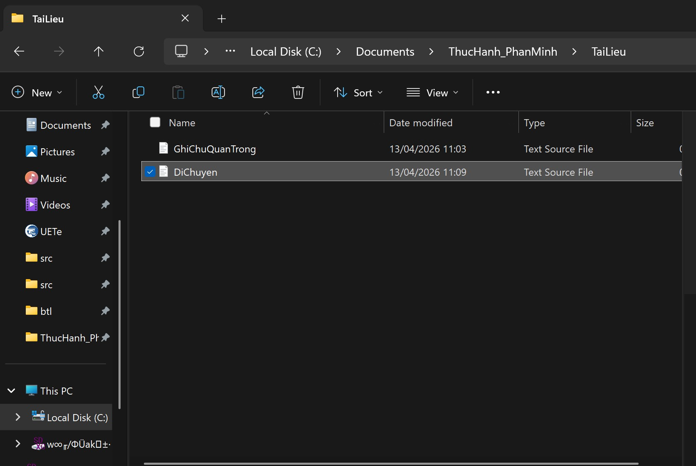
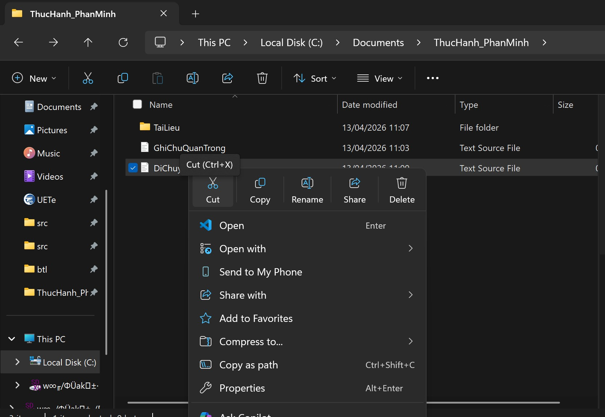

Tổng quan
Task 1 rèn kỹ năng thao tác tệp và thư mục trên Windows bằng File Explorer. Nội dung tập trung vào vòng đời cơ bản của một tệp: tạo, đổi tên, sao chép, di chuyển, xóa, xóa vĩnh viễn và khôi phục.
Mục tiêu: hình thành thói quen quản lý dữ liệu có cấu trúc, tránh thất lạc và hiểu rõ khác biệt giữa Delete, Shift + Delete và Restore.
Quy trình thực hành
- Mở File Explorer bằng Windows + E, chọn ổ đĩa hoặc thư mục Documents.
- Tạo thư mục thực hành, sau đó tạo tệp văn bản
GhiChu.txt. - Đổi tên thành
GhiChuQuanTrong.txtvà tạo thư mục conTaiLieu. - Sao chép tệp vào thư mục con bằng Copy/Paste.
- Tạo
DiChuyen.txt, dùng Cut/Paste để di chuyển sangTaiLieu. - Xóa một tệp vào Recycle Bin, xóa vĩnh viễn tệp còn lại bằng Shift + Delete, rồi khôi phục tệp từ Recycle Bin.
Kết quả minh chứng
Quy trình hoàn thành cho thấy người học nắm được sự khác nhau giữa sao chép và di chuyển, giữa xóa tạm thời và xóa vĩnh viễn.


Bài học
Kỹ năng quản lý tệp tưởng đơn giản nhưng là nền tảng của mọi bài tập số. Khi đặt tên rõ ràng và hiểu đúng thao tác, việc nộp bài, lưu minh chứng và chia sẻ tài liệu trở nên ít lỗi hơn.